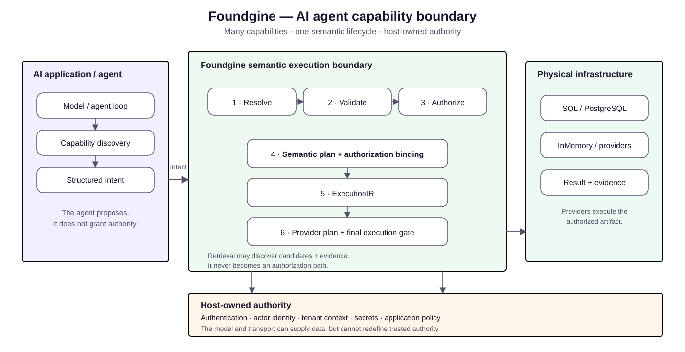

Give agents capabilities, not database authority.
An agent can propose intent. The application decides what that intent means, who may exercise it, and how it executes.
The problem with tool sprawl
Replacing generated SQL with many individual tools only helps if those tools share the same security boundary. Otherwise each tool can grow its own authorization, tenant filtering and query logic.

The Foundgine pattern
An AI agent is an untrusted caller. Its model output becomes structured intent and enters the same lifecycle as any other caller:
AI agent ↓ capability discovery / structured intent ↓ Foundgine ├─ resolve ├─ validate ├─ authorize ├─ plan └─ execute ↓ provider
Capability discovery is advisory
Capability discovery tells the agent what the application exposes and how to form valid requests. It does not grant permission. Every actual request is resolved and authorized again using the trusted execution context supplied by the host.
Host-owned security
| Concern | Owner |
|---|---|
| Authentication and identity | Host/application identity system |
| Tenant and actor context | Host/application |
| Semantic authorization | Foundgine policy |
| Physical data access | Provider boundary |
| Model selection and orchestration | AI application |
What the AI integration provides
Foundgine.Providers contains the AI/model integration with Microsoft.Extensions.AI and the MCP tooling integration. These integrations expose capabilities; they do not become the source of application authority.
What Foundgine does not provide
Foundgine is not a general autonomous-agent framework. Model choice, memory, orchestration, deployment and autonomous behavior remain in the surrounding application. For the detailed agent boundary, read AI agents.